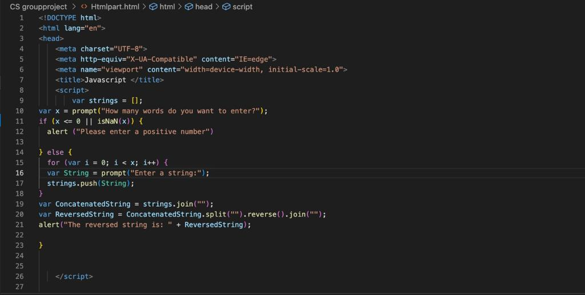
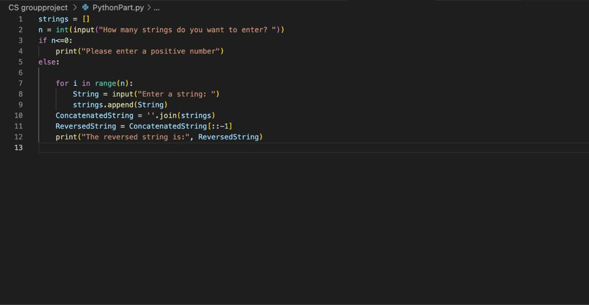
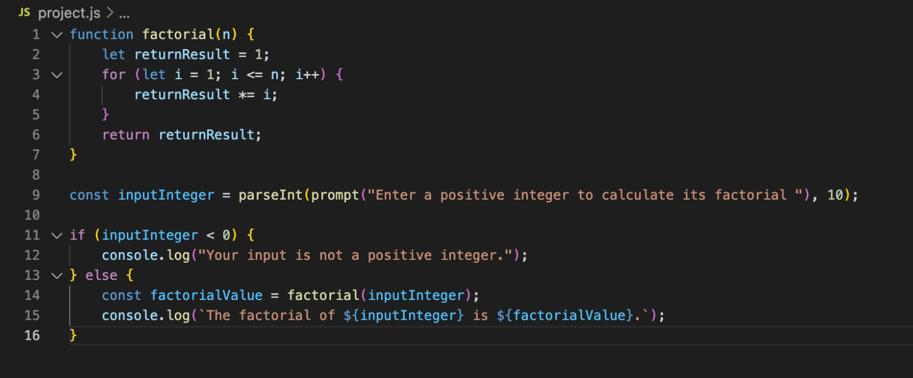
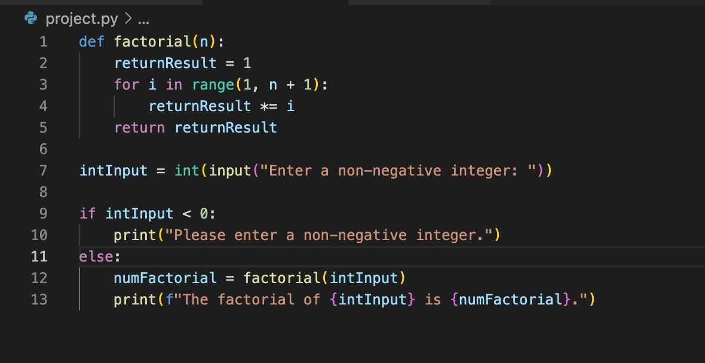

FUNCTIONS IN PYTHON
We will introduce some examples of functions performed with Python and Javascript, in order to get a broader view on how this programmin language works
Function 1:
The following code will showcase the differences between Python and JavaScript by running the same operation but in two different programming Language. The operation aims to reverse the string that user entered. The system will first ask the user to type the number of strings they want to enter. However, if the user input a negative or non-numerical character, they will not be able to the next step. When the user entered a number, then they have to enter the string by their own preference, and all stings that the user entered will be stored in a list. Finally, it will be concatenated together and displayed in reverse order.

Example of JavaScript code

Example of Python code
Function 2:
The second function that we wanted to perform is a function that allows a user to input a positive integer and return the factorial of that integer. For example if the user input 3, the function will return 6 as 3! = 1 x 2 x 3 = 6. If the user input a negative integer the function would print that the wrong input had been made. Both functions use for loops to achieve this. The for loop allows for every number from 1 to the integer to be multiplied together.
There will be an input function done to collect input from the user, after this is done, it will be checked if the integer is positive. If it is positive the code will execute the factorial function on the input integer and print the value to the console.

Example of JavaScript code

Example of Python code